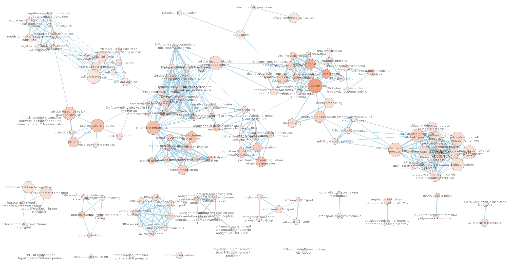

Optional Module 8 Lab 1: Gene Regulation and Motif Analysis Practical Lab /chIP-seq
This work is licensed under a Creative Commons Attribution-ShareAlike 3.0 Unported License. This means that you are able to copy, share and modify the work, as long as the result is distributed under the same license.
By Veronique Voisin, Chaitra Sarathy and Ruth Isserlin
Goal of this practical lab
- Perform pathway analysis starting with a chIP_seq bed file and visualize the results using Cytoscape/EnrichmentMap.
- Be able to use the tool GREAT with distal and proximal parameters.
- Run MEME-chip to find over-enrichment of transcription factors.
- Optional: learn how to use iRegulon to find targets of a transcription factor of interest and find orthologs using the tool g:Profiler/g:orth.
This practical lab consists of 6 exercises and 2 of them are optional. Follow the step-by-step checklist through the exercises.
Before starting the lab, download the files:
Right click on link below and select “Save Link As…”.
Place the file in your CBW work directory in the corresponding module directory.
- GSE128767_RUNX1_ChIP.peaks.bed
- Distal_GOBP_greatExportAll.tsv
- Proximal_GOBP_greatExportAll.tsv
- RUNX1_Affy.gmt
- GSE128767_RUNX1_ChIP.peaks.fasta
EnrichmentMap and Cytoscape layouts: Network layouts are flexible and can be rearranged. What you see when you perform these exercises may not be identical in appearance to what you see in the screenshots in the practical lab, or what you have seen other times that you have performed the exercises.
Dataset used during this practical lab
ChIP-seq for RUNX1 from pools of mouse CD1 fetal ovaries (E14.5)
NCBI GEO: GSE128767
From the paper:
RUNX1 maintains the identity of the fetal ovary through an interplay with FOXL2
Nicol B, Grimm SA, Chalmel F, Lecluze E et al.
Nat Commun 2019 Nov 11;10(1):5116.
PMID: 31712577
Abstract:
Sex determination of the gonads begins with fate specification of gonadal supporting cells into either ovarian granulosa cells or testicular Sertoli cells. This process of fate specification hinges on a balance of transcriptional control. We discovered that the transcription factor RUNX1 is enriched in the fetal ovary in rainbow trout, turtle, mouse, and human. In the mouse, RUNX1 marks the supporting cell lineage and becomes granulosa cell-specific as the gonads differentiate. RUNX1 plays complementary/redundant roles with FOXL2 to maintain fetal granulosa cell identity, and combined loss of RUNX1 and FOXL2 results in masculinization of the fetal ovaries. To determine whether interplay between RUNX1 and FOXL2 occurs at the chromatin level, we performed genome-wide analysis of RUNX1 chromatin occupancy in E14.5 ovaries. The top de novo motif identified in RUNX1 ChIP-seq matched the RUNX motif. We found that RUNX1 chromatin occupancy was partially overlapping with FOXL2 chromatin occupancy in fetal ovaries.

They found that RUNX1 is expressed in the fetal ovary at day 14 in mice and that it is necessary for a good development of the ovary.

A KO of Runx1 and another TF Foxl2 abolished the normal development of the ovary.
#Why did we choose this dataset?
- RUNX1 is a transcription factor that is interesting to study as it has major biological functions.
- chIP-seq peaks are stored in a bed file that can be download from GEO entry.
- Linked to transcriptomic data GSE129038
- Quality of the data
#The 3 pieces of information that we need to get before starting the analysis are:
- the model organism: Mus musculus
- genome version: mm10
- bed file : GSE128767_RUNX1_ChIP.peaks.bed
We have indicated below how we retrieved these information but you don’t need to do it for the lab:
- In the main GEO entry GSE128767
- click on one of the samples (for example - GSM3684638).
- On the sample page scroll down to the “Data processing” section
- The organism is mus musculus and the reference genome is mm10
- 3 files are available from the GEO entry (see below).

- The bed file provided by the authors (GSE128767_RUNX1_ChIP.peaks.bed) (linked on the main dataset page under supplementary file - GSE128767 ) has the right format to be used by GREAT for the pathway analysis; The first 3 fields contain the chromosome name, start and end. They are the 3 required fields. The fourth column is optional and consists of the chromosomal position, followed by MACS2 score value and FDR. Below is an example view of the BED file:

Exercise 1 - Run pathway analysis using GREAT
Perform pathway enrichment
- Open a web browser and open GREAT
- In Species Assembly choose Mouse: GRCm38(UCSC mm10, Dec. 2011)
- InTest regions Click on Choose file and locate the file GSE128767_RUNX1_ChIP.peaks.bed that you save on your computer.

- In Association rule settings, click on Show settings to see the current rule set to associate genes to peaks

- Do not change the settings. We are doing a distal analysis where genes (genomic regions) are associated with peaks within 5k upstream of the transcription start site of the genes (TSS), 1kb downstream and up to 1000 kb to nearest gene.
- Click on the Submit button at the end of the page
Explore the results.
- Expand the Job Description tab to check the parameters,

- click on View all genomic region-gene associations (second line from bottom in blue font)
- In a new tab there will be 2 tables containing the list of the chIP-seq peaks and corresponding associated genes.
- Download both of the tables (region -> gene and gene -> region)

- Return to the main GREAT results page.
- In the main results tab, under the Region-Gene Association Graphs, we can see that the peaks were mainly associated with genes located +-5kb of the TSS in addition to the presence of some distal peaks as expected based on the association rule that we have used.

Let’s explore the pathway analysis results and look at the GO Biological Process table.
Scroll down to the GO Biological Process section.

As we defined a distal rule to associate peaks with genes, we are going to look at the binomial FDR. The binomial test assesses whether the number of genomic regions annotated with the tested pathway is significantly larger than the number of genomic regions not annotated with the tested pathway. The fold enrichment is the proportion of genomic regions annotated with the tested pathway and genomic regions not annotated with the tested pathway.
- Export the GO BP result on your local computer:
- Under the GO Biological Process title, locate the Table controls:
- select the option All ontology data as .tsv.
- A file called greatExportAll.tsv will be saved on your computer.
- Rename the file Distal_GOBP_greatExportAll.tsv. We will import this file later in Cytoscape/EnrichmentMap.

Perform pathway enrichment - Proximal approach
We are now trying a proximal approach to define genes associated with peaks.
- Go back to the main GREAT page. Make sure the bed file is still uploaded and the genome is set to mm10.
- Locate the Association rule settings and click on Show settings.
- Set Proximal 1kb upstream, 1kb downstream plus Distal up to 1kb .
- Uncheck the Include curated regulatory domains box.

- Click on Submit.
Explore the results. - proximal analysis
- In the Region-Gene Association Graphs , we can see that using the proximal rule in our settings, genes are associated with peaks that are all within the +-5kb rule (in fact the +-1kb rule) and there are no more distal peaks.

- Explore the GOBP results and export the results on your computer.

Using this rule, genes will be associated with peaks only if they are within 1kb of the transcription start site of the genes. It reduces the problem to a gene list and in this case, a Fisher’s exact (Hyper FDR Q-Val) test can be applied to test for pathway enrichment.
- Export the GO BP result on your local computer:
- Under the GO Biological Process title, locate the Table controls:
- select the option All ontology data as .tsv.
- A file called greatExportAll.tsv will be saved on your computer.
- Rename the file Proximal_GOBP_greatExportAll.tsv. We will import this file later in Cytoscape/EnrichmentMap.
Exercise 2 - Build an enrichment map to visualize GREAT results
- Open Cytoscape
- In the menu bar, select Apps –> EnrichmentMap
- Drag and drop the GREAT result file Distal_GOBP_greatExportAll.tsv into the DataSet box.
- Set the FDR q value cut-off to 0.001
- Click on Build

- A Set Parameters dialog box opens: Choose Binomial p-value.

- Explore the map.
 * Note that EnrichmentMap creates annotations by default. You can delete the auto-generated annotation by going to the AutoAnnotate tab. Click on the settings menu (three lines) -> Delete. Now you can create new annotation as explained below.
Exercise 3 (optional): Practice building enrichment maps and auto-annotation
Optional exercise 3a: AutoAnnotate the enrichment map:
- In the menu bar, select Apps and then AutoAnnotate.
- A dialog box opens.
- Go to Advanced. Under Cluster Creation, select Use clusterMaker2 App
- Under Label Creation, select Name of most significant node in cluster
- Click on Create Annotations.
Arrange the display by clicking on each module name listed in the right panel and then move them apart from the other modules using a mouse or a trackpad.

What are the main biological functions enriched in genes associated
with RUNX1 peaks?
Is it relevant in relation to what we know about
the role of RUNX1 in development?
Exercise 4: Add RUNX1 targets and RUNX1 KO genes on the distal enrichment map.
During this exercise, we will connect the proximal chIP-seq enrichment map with the RUNX1 targets as well as the genes that are dysregulated after RUNX1 KO. We have already created a .gmt file that contains these gene lists (RUNX1_Affy.gmt). The format of a .gmt file is a tab delimited text file with one row per gene-set. Each gene-set contains the name of the gene-set, a description of the gene-set followed by the names of the genes. The file extension is changed from .txt to .gmt.

- Note: We extracted the RUNX1 targets using the iRegulon Cytoscape app and the optional exercise 6 describes the steps. We extracted 200 genes to build the RUNX1 target gene list.
This RUNX1 study had transcriptomics data (microarray) in addition to the chIP-seq data. The microarray data gives an overview of all genes that are changing between a fetal ovary with normal development and a fetal ovary after RUNX1 knock-out (KO) (GSE129038). We have used the tool GEO2R to get the top 500 up and down regulated genes (see description of the steps at the end the document).
step 4a: post analysis:
- Go to the EnrichmentMap tab
- Make sure that the Distal_GOBP_greatExportAll network is selected.
- click on Options… –> Add Signature Gene Sets….

- Click on “Load from File….” located on the right hand size and select the file “RUNX1_Affy.gmt” that you have saved on your computer.
- Set “Test” to “Hypergeometric Test” with the “Cutoff” set to 0.05.
- Click on finish

The 3 gene-sets are now added to the map. Each line (edge) shows pathways that have genes in common with the signature gene-sets.
Step 4b Optional: Change the edge style of the signature gene-sets:
- Click on one signature gene-set node on the map to select it (it should appear in yellow).
- In the Cytoscape menu bar, click “Select” –> “Edges” –>“Select Adjacent Edges”

- Go to “Style” and in the “Edge” table, next to Stroke Color (Unselected) click in the bypass column Byp. , click on the box and select a color.

- Repeat for all genes:
- In “ Style” and in the “Edge” table, go to Width and set Column to “EM k_Intersection”

Exercise 5: Learning how to run MEME-chip from the MEME suite (https://meme-suite.org/meme/tools/meme-chip)
Format the Data
MEME suite accepts sequences as input and not chromosome coordinates. The bed file contains the chromosome coordinates of the peaks. Therefore, we first need to fetch all the peak sequences. UCSC genome browser (https://genome.ucsc.edu/) has some tools to help us.
If needed, you can use the finalized formatted file GSE128767_RUNX1_ChIP.peaks.fasta to run MEME-chIP but we encourage you to follow the below steps to learn how to do it yourself.
The step that we took to create it are described below and were adapted from https://fasta.bioch.virginia.edu/cshl/stubbs/meme-ex/meme.html.
Exercise 5a: Download sequences from .bed coordinates
- Open the UCSC browser main page (http://genome.ucsc.edu/).
- Click on Genomes in the menu bar and select Mouse GRCm38/mm10.

- The UCSC Genome Browser window opens in a new tab.
- Below the tracks, click on the button add custom tracks. A new window will open.

- Upload the bed file GSE128767_RUNX1_ChIP.peaks.bed; press the Submit button.

- A new window will appear with your updated track. Make sure that Table Browser is selected and click on go.

A new window will appear. Select sequence as output format and plain text as file type returned. Click on get output.

A new window will open where you can choose various options for your sequence (e.g. repeat masking). Note that for meme and similar programs it is important to mask repeats to N; otherwise, sequences in repetitive elements will dominate your motif list.
- Select Mask repeats
- next to Mask repeats change option to to N
- click on Get sequences

A fasta file will appear; save this as plain text (copy and paste in a text editor or right click on the page and select Save As… and save the file to your computer).
- here is the file in case you need it: GSE128767_RUNX1_ChIP.peaks_INTERMEDIATE.fasta
You will need to modify the UCSC header that comes with the sequences to use them for meme:
- Go to https://fasta.bioch.virginia.edu/fasta_www2/clean_fasta.html
- upload or copy and paste the plain text file from the above step
- check Extract CHR:coordinates from UCSC
- Click on “Clean Sequence”

- Save this as plain text under the name GSE128767_RUNX1_ChIP.peaks.fasta (copy and paste in a text editor or right click and Save as will not work for this file) - it will look like the below file.

Exercise 5b: Run MEME-chIP
- Open https://meme-suite.org/meme/tools/meme-chip.
- Expand Motif Discovery
- Click on MEME-Chip

- Under Input the primary sequences box, upload the file GSE128767_RUNX1_ChIP.peaks.fasta .
- Click on Start Search.

Important: Save the url so you can access your
result later even if you close the MEME window.
For example my url is -
https://meme-suite.org/meme/info/status?service=MEMECHIP&id=appMEMECHIP_5.3.31620409506563-973419203

- MEME-ChIP will run for about 1 hour:
- look at the results below from the MEME-chip result,
- try to answer the questions and follow next steps.
- Check your MEME-ChIP results at the end of the practical lab.
- When your job is complete you should see the following page on your saved link:

- results of the top motifs that were found significantly enriched in the peak sequences.

To which transcription factor does it correspond?
Why is the
centered distribution of the motif important (what does it mean)?
Exercise 6 (optional): Get the iRegulon RUNX1 targets and find the mouse orthologs using g:Orth (from g:Profiler) to create the gmt file used in Exercise 4.
- In Cytoscape, locate “App” in the menu bar and select “iRegulon” and then “Query TF-target database”

- A “Query TF-target database for a factor” dialog box opens.
- Enter “RUNX1” in the Transcription Factor field and
- in Network, set “Number nodes (approx.)” to 200.
- Click on Submit

- To arrange the style,
- go to the Cytoscape menu bar and select Layout –> yFiles Organic Layout.
- Go the Cytoscape menu and select View –> Always Show Graphic Details to see the gene names.
- Below the network in the Table Panel:
- click on Node Table and
- click on the Export Table to File… icon.
- Click on OK.

A File Metatargetome for RUNX1_1 default node.csv is now saved to your computer.
Open the file Metatargetome for RUNX1_1 default node.csv and
- copy the gene list.
- Open g:Profiler/g:orth at https://biit.cs.ut.ee/gprofiler/orth.
- Paste the gene list into Query and
- in Options set Organism to Home sapiens and Target to Mus musculus.
- Click on the orange button Run query.

- Click on the icon next to the “ortholog name” column to copy the gene list. This is the gene list containing the mouse orthologs of the RUNX1 targets that we used in Exercise 4.

As reference (you don’t need to go through these steps during the practical lab): Analysis of the RUNX1 Affy transcriptomics using GEO2R.
- Go to the GEO page corresponding to the Affymetrix transcriptomics data:https://www.ncbi.nlm.nih.gov/geo/query/acc.cgi?acc=GSE129038
- Click on Analyze with GEO2R
- Define your groups and click on Analyze
- Export the table
- Rank the genes using the absolute value of t
- Remove the gene name duplicates
- Select the top 500 genes up regulated using the largest t value and the 500 genes down regulated using the smallest t value